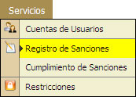
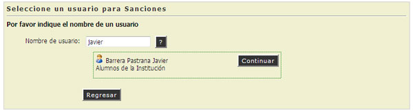
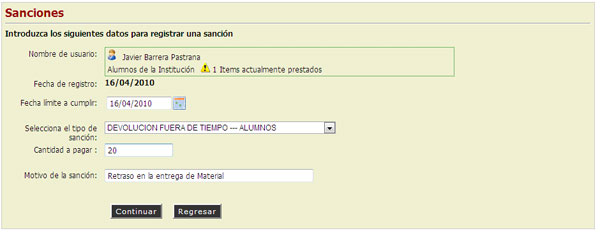
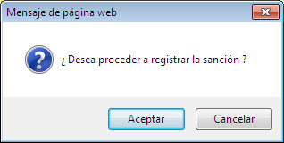
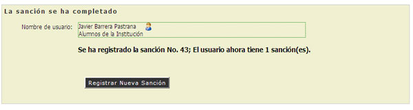

3.2. Registro de Sanciones.
En esta opción el Adminsitrador del Sistema podrá registrar Sanciones a los usuarios que cometan algún tipo de falta, en el cual se registrarán los motivos y el tipo de sanción que recibirá el usuario.
REQUISITOS: Para registrar una Sanción deberá contar con el Nombre de Usuario al quien se le sancionará y el administrador deberá contar con un catalogo de sanciones establecido.

- Escribir el Nombre de Usuario, Teclee [Enter].
- Si el usuario no existe el sistema mostrará un Mensaje de Alerta ("El usuario no fue encontrado").
- Si el usuario existe, el sistema mostrará el Nombre Completo del Usuario. (Continuar Paso No. 2)
- Hacer "Clic" en la opción [Continuar].

- El Sistema mostrará la pantalla donde escribirán datos necesarios para registrar la Sanción.

- "Seleccionar" o Escribir la Fecha Límite para cumplir la Sanción.
- "Seleccionar" el Tipo de sanción.
- Escribir la Cantidad Monetaria o Cantidad de Horas a cubrir, según sea el caso.
- El sistema mostrará un Mensaje de Alerta si se desea proseguir con la Sanción, Hacer "Clic" en la opción [Aceptar].

- El sistema mostrará un Mensaje de Alerta y enviará una notificación por email, la sanción ha sido registrada, los datos del usuario y el número de Sanciones Registradas.

NOTA: El Botón con el Símbolo de Interrogación (?) , puede ayudarnos a Localizar o Consultar un Usuario de la Institución o un Ítem de un Material.